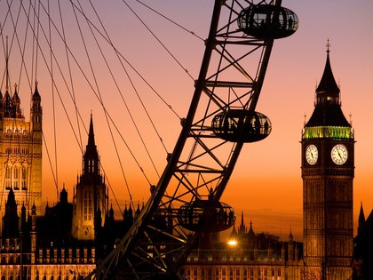

Welcome to the city!
Looking for amazing cities to explore? Well Look no further. Here are our top 5 destinations for city visits.
Bangkok, Thailand
London, UK
Paris, France
Dubai, U.A.E.
Singapore
For the third year running, Bangkok is the most popular city for international travelers, thanks in large part to its appealing mix of historical sites and modern hot spots: the gilded Grand Palace complex, the luxurious Mandarin Oriental, the canals and alleys filled with street food vendors—and that's just the start.
There's so much to do in London, it bears repeat visits. An efficient transportation system means you won't have to blow your budget on transportation here, which frees you up to spend your dollars at the city's new prosecco-only bar and latest Jacques Garcia-designed hotel—and maybe pick up a bespoke suit while you're at it.
It's nearly impossible to resist the charms of France's capital—and more than 17 million travelers obviously agree. The city is known for its chic hotels and inimitable restaurants, which might explain why it's second only to Dubai in terms of dollars spent per day ($301). Totally worth it.
It seems like Dubai will never stop trying to outdo itself. Within the past year, the city successfully tested a flying drone taxi and broke its own record for the world's tallest hotel. But all that pomp seems to be paying off—quite literally. Tourists spent an incredible $537 per day there in 2017.
Even if you haven't seen Crazy Rich Asians yet (shame!), you probably know a little bit about this alluring city. Not only does Singapore have the world's best airport and most Instagrammable hotel, but its street food continues to reign supreme.